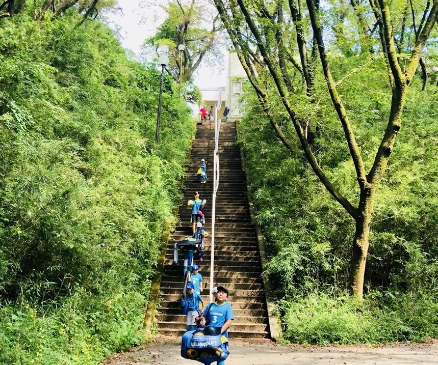

自立を促す指導
Policy
子どもには自立の練習が必要
好きな遊びや友達、特技を見つけて、生き生きと過ごすこと。 好きな仕事や異性を将来見つけて、大切な選択をしていくこと。 子どもが持つ無限の可能性はすべて、自分で考え動き、失敗や成功を繰り返すことで発見していくこと―すなわち自立が必要なのです。 「どんなおもちゃで何して遊ぶか」「翌日のための準備」などお子様に口や手を出し過ぎていませんか？
自立をどう習慣化するか？
アンマリが最重要視するのは「選手が自分の考えで取り組んだこと」です。 監督の意向に背いたプレイだろうが、結果としてミスしようが、自分の考えで挑戦したこと自体を何よりも賞賛します。 そして、なぜそれが失敗したのか、あるいは次そのプレイをするならどうすれば良いかを一緒に考えてトライしてみます。
エピソード
この習慣による子ども達の変化を2つご紹介します。
サッカー嫌いを乗り越えたT君
当時小学4年生のT君は、幼馴染がいることをきっかけに当チームに入団しました。 彼は幼稚園生の頃からサッカーが大好きだったのに、前に所属していたチームでとても辛い経験があり、サッカーのことを嫌いになり始めていました。
T君は以前所属していたチームで、監督から悉く叱られ続けていました。 叱られていた理由は「T君自身で判断した戦術が、監督が指示していた戦術と違うものだから」です。 そのため、T君はプレーすることすら怖がるようになっていました。 ですのでアンマリアトーレでは、彼に「選手は監督の駒やマシンではなく、アイデアを表現するものだ！」と伝え続け、自分の考えで取り組んだことは（結果としてミスをしようが）賞賛し、「Tの判断は間違っていない。 次はxxxをすればもっと良くなる！」と伝え続け、本人のアイデンティティを承認する取り組みを続けました。 その結果、Ｔ君は監督の想像を上回るほど創造的なプレイをする選手に成長しました。
PKへの恐怖を克服したK君
当時高校二年生のKという子がいました。 彼は自分のせいで試合に負けるのが怖いため「PKは蹴りたくない」と言っていましたが、夏の大会でその順番が回ってきてしまいました。 そして、そのPKに失敗してチームが負けてしまいました。
Ｋ君は試合終了後の集合写真ではボロボロ泣き、それ以来、責任を持つプレイから一層逃げるようになってしまいました。 しかし、チームのレギュラーを張っている彼が精一杯やっての失敗を、チームのみんなが責めるでしょうか？
私たちはチームのみんなと一緒に、彼が最高の選手であることを伝え続けました。 失敗を許容し、仲間とは何なのかをみんなで問い続けました。 ３カ月後、彼は恐怖を克服し、PKで「やりたい」「蹴ります」と手を挙げるようになりました。

経験豊富な指導者
Coach
武藤 太智
サッカー協会公認ライセンス取得。 幼児から社会人チームまで10団体以上／20年以上の指導経験があり、自身も長年サッカー選手としての経験がある。